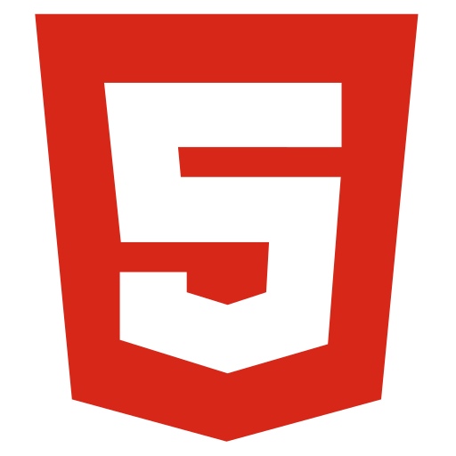
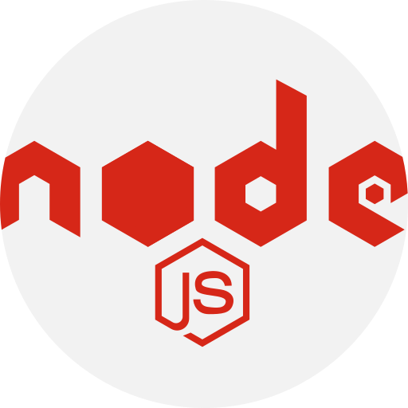
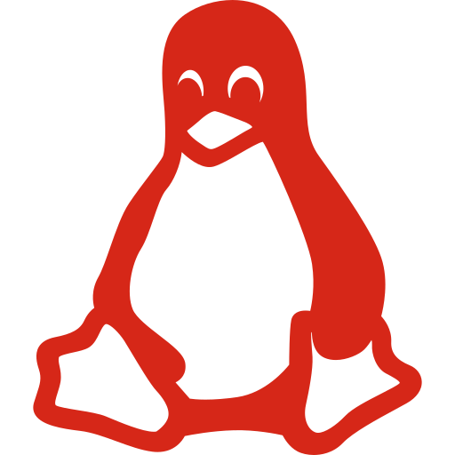
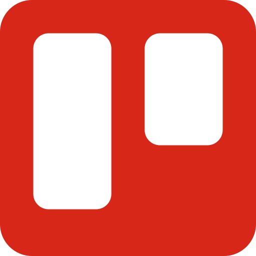
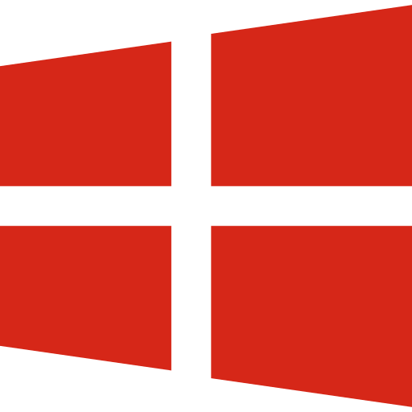

Présentation personnelle
Passionnée par l'innovation technologique et les sciences, je suis actuellement
une formation en alternance de développeuse informatique au CESI.
Je suis à la recherche d'un poste de développeuse en alternance. J'ai assisté à
plusieurs reprises à l'Agile Tour Bordeaux et je souhaiterais travailler dans une équipe Agile
J'ai déjà eu l'occasion de travailler en alternance;
j'ai apprécié de pouvoir continuellement mettre en pratique les connaissances que j'ai acquises, et
c'est ce qui m'a amenée à choisir la formation du CESI.
Je suis contente de pouvoir vous partager mes projets.
Mes projet Professionnels
Mes compétences
Programmation
- 
- 
JavaScript
C++
HTML 5
CSS 3
Node.js
Logiciels
- 
- 
- 
Git
Visual Studio Code
Linux
Trello
Libre Office
Windows
Inkscape
Général
Effectuer des tâches administratives
Gestion et contrôle des commandes et des livraisons Comparaison des offres pour les produits et services Réalisation et contrôle de statistiques simples
Conseil et relation client
Gestion des conflits et des réclamations. Présentation et mise en valeur des prestations et services proposés
Formations des nouvelles recrues
Suivi de la formation et de l'integration. Transmission des connaissances du métier.
Mes atouts
- Capacité d'adaptation
- Curiosité
- Persévérance
- Communication
- Travail en équipe
- Rigoureuse
- Autonomie
Adaptation de mon approche en fonction des changements qui surviennent. Comprendre et evaluer différents points de vue.
Soif de savoir, de connaître, de comprendre et d'observer.
Volonté d'atteindre les résultats visés sans abandonner facilement.
Intereaction efficace avec d'autres personnes et d'autres groupes. Adaptation du vocabulaire et le message à son auditoire. Respect des opinions des des autres.
Apprécie la collaboration avec mes collègues ou les autres personnes impliquées dans un projet commun. Faire partie d'une équipe et de travailler en coopération sait gagner la confiance des autres. Encourager la participation et le partage des connaissances.
Personne ponctuelle, créative, réactif et consciencieuse dans ce que j'entreprends.
Trouver les solutions par moi même et par la suite demander de l'aide si vraiment cela est nécessaire.
Mes formations
-
Formation développeuse informatique
2019 - 2021
Ecole du supérieure de l'alternance CESI
Bordeaux, France -
Certificat de réussite 2019
Apprenez à créer votre site web avec HTML5 et CSS3
OpenClassrooms -
Certificat fédéral de capacité 2009 - 2013
Gestionnaire en Intendance
Maison de retraite médicalisé Les Arbres
Chaux-de-Fonds, Suisse
Formation pluridisciplinaire en alternance,
à la supervision de l'entretien du linge et des locaux
Reconnu équivalent à un diplôme niveau IV -
Attestation de Formation Professionnelle 2013
Option Animaux sauvages
Institut de Formation en soins Animaliers -
Attestation de Formation Professionnelle 2010
OptionNouveaux animaux de compagnie
Institut de Formation en soins Animaliers -
Attestation de Formation Professionnelle 2009
Auxiliaire de santé
Institut de Formation en soins Animaliers
Mon expérience
-
Gestionnaire en Intendance
2009 - 2013
Maison de retraite médicalisé Les Arbres
Chaux-de-Fonds, Suisse -
Commis de cuisine
2011 - 2012
Restauration collective DSR
Chaux-de-Fonds, Suisse -
Employée de blanchisserie industrielle
2010 - 2011
Blanchâtel SA
Chaud-de-Fonds, Suisse -
Assitante vétérinaire
Septembre 2006 - juin 2007
Cabinet vétérinaire Henchoz
Le Locle, Suisse